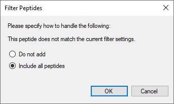
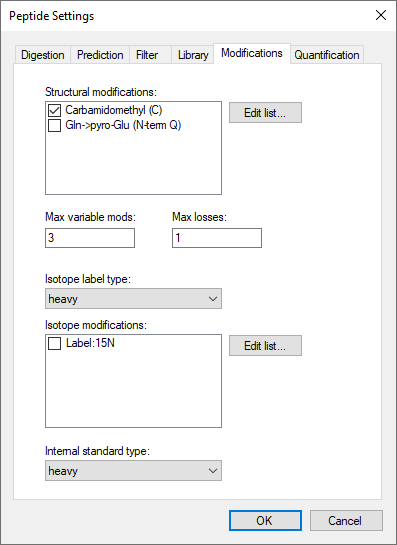
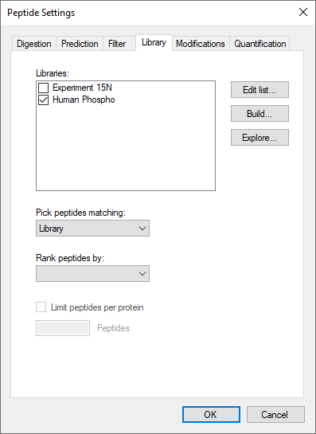
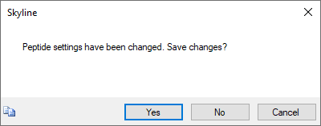
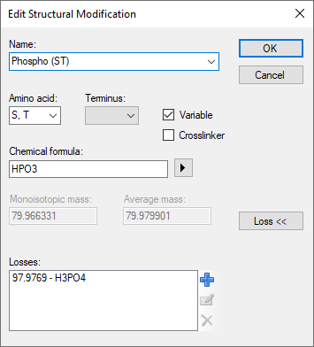
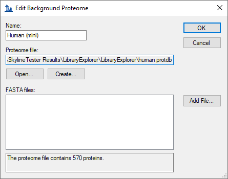
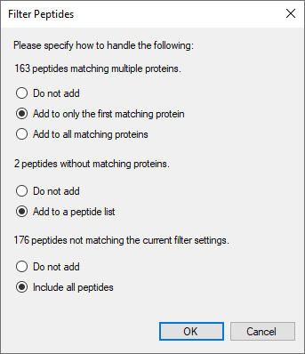
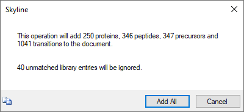
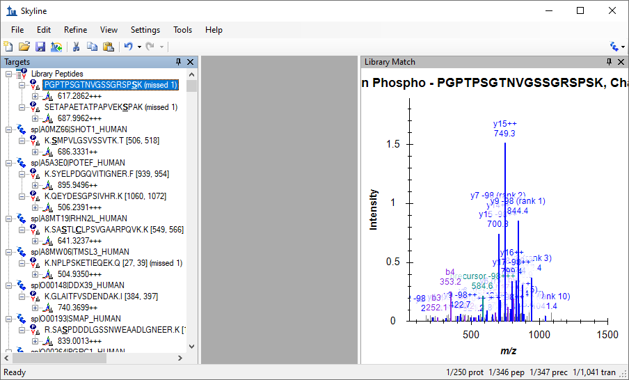

Skyline has had the ability to build BiblioSpec spectral libraries1 from experimental peptide search results for a long time. Skyline also allows you to use any of the major publicly available spectral libraries in from the Global Proteome Machine (GPM), National Institute of Standards (NIST), and the Institute for Systems Biology (ISB). These features have been available since version 0.2, and are well documented in the Skyline Targeted Method Editing tutorial and Skyline Video 1: Method Building.
This tutorial presents the Spectral Library Explorer. It will allow you to browse the contents of any library that can be used with Skyline, whether you built it from your experimental results or downloaded it from a public repository. You can also use the library explorer to add peptides to your Skyline document, either one at a time or all at once. By providing a background proteome and appropriate modification settings, you can help Skyline interpret a raw spectral library in the context of your experiments, to create more information rich documents.
To start this tutorial, download the following ZIP file:
https://skyline.ms/tutorials/LibraryExplorer.zip
Extract the files in it to a folder on your computer, like:
C:\Users\brendanx\Documents
This will create a new folder:
C:\Users\brendanx\Documents\LibraryExplorer
If you inspect the contents of this new folder, you will find that it contains only 3 files:
Now start Skyline to learn more about what it can do with these files.
Before you can explore a library, you need to tell Skyline where to find it. Since it is assumed that you will eventually use these libraries as part of your Skyline editing environment, you achieve this by adding your library of interest to the global list of libraries for document editing. If your objective is really just to browse through an existing library, as we will start out doing in this tutorial, you can probably imagine a simpler implementation, but in practice, if you are using or building libraries for editing documents in Skyline, you will see that the library explorer gives you quick access to your libraries.
To get started with the library containing 15N labeled peptides perform the following steps:
The Libraries list in the Peptide Settings form should now contain the ‘Experiment 15N’ library you just created.
The Peptide Settings form should now look something like this:
Next, ensure that peptide modifications are set to the default values:
The form should look like this:

To open the library explorer and view the contents of the library you just added, do the following:
A message is presented about the modifications Skyline has detected in the Experiment 15N library. In your own work, you will often want to accept these automatically detected peptide modifications, but for this tutorial:
The library explorer should look something like this:

On the left side of the explorer, the Library list should show that you are currently viewing the Experiment 15N library. The Peptide list below it shows the peptide sequences and charge states which have been matched to the spectra in this library. Above the peptide list is a filter box and below it are paging controls. The <<Previous and Next>> buttons are disabled for this library, because all of its spectra can be listed in a single page. At the very bottom, the library explorer reports the page contains 1 through 43 of a total 43 peptide spectrum matches.
As in the Skyline peptide document view, modified amino acid residues appear bold and underlined in the library explorer peptide list. Hover your cursor over any modified peptide, and Skyline will display a tip with the modification masses listed after each modified amino acid residue.
Some of the listed peptides show a peptide icon to the left of the sequence, while others do not. The icon indicates that the current document modification settings match the modified state of the peptide in the library. None of the peptides where the entire sequence is bold and underlined show the icon. This means that the current document settings do not explain 15N isotope modification of all amino acid residues. The modified peptide CPLPRPWALTFSYGR+++ does show an icon, however, because the current document specifies the ‘Carbamidomethyl (C)’ modification. If you hover over the peptide, you can see that the modification on the Cysteine is listed C[+57.0] as expected.
To narrow the list of peptides with the peptide filter box, do the following:
The library explorer will display all peptides with the sequence prefix you type in this text box. In this case, the library is small enough that the single Q is enough to reduce the list to the various modified states for the two peptides QVLFSADDR++ and QVLFSADDRVK+++.

Hover the cursor over the one displayed as QVLFSADDR++, and you will see that the glutamine modification is displayed in the tip as Q[+17.0] for a Gln->pyro-Glu modification. To understand why Skyline displays both QVLFSADDR++ and QVLFSADDRVK+++ twice, you can hover the cursor over these peptides as well. You will find that they represent all 15N modified peptides with and without the Gln->pyro-Glu modification.
Turning your attention to the right side of the library explorer, you will see a Skyline MS/MS spectrum chart similar to the one Skyline displays during document editing, and in fact this chart supports most of the same features. To explore a few of these features, perform the following steps:
Notice that the toolbar also contains buttons to copy, save and print the current chart, and as with most charts in Skyline, further options can be accessed through a right-click menu.
The library explorer should now look something like this:

The chart is pretty crowded in a window small enough to paste into this document. Hopefully you are using a larger window, but you can also zoom and navigate in this graph as you would graphs in the main Skyline window.
Now clear the filter box above the Peptide list, so that all peptides are again displayed.
As noted, many of the peptides in the library do not match the current peptide modification settings for your document. To address this issue, perform the following steps, without closing the Spectral Library Explorer:
To add the Gln->pyro-Glu modification:
This should select the modification “Gln->pyro-Glu (N-term Q)” and the Edit Structural Modification form should look like this:

To add a 15N isotopic modification on all amino acid residues:
The Edit Isotope Modification form should look like this:

The Peptide Settings form should now look like this:

You should find the peptide list looking like this:

All of the peptides now display icons to the left, indicating your document modifications match those found in the library, and modifications are now visually displayed on the peptide sequence text just as they would be in the document peptide view. Isotope modifications are highlighted in blue, and it is now possible to distinguish visually between the 15N labeled QVLFSADDR and its pyro-Glu modified form QVLFSADDR.
The Spectral Library Explorer makes it simple to add library peptides to your document.
The following form may appear:

This form appears because the peptide AEVNGLAAQGKYEGSGEDGGAAAQSLYIANHAY contains a missed cleavage, and the default document settings filter for only peptides with no missed cleavages. The maximum number of missed cleavages allowed can be changed in the Digestion tab of the Peptide Settings form, but for now do the following:
The peptide AEVNGLAAQGKYEGSGEDGGAAAQSLYIANHAY is added to the document in a peptide list named “Library Peptides”. Notice also that the peptide has been matched to the library and that the Library Match graph is displayed in the Skyline main window.
To add more peptides from the Spectral Library Explorer, do the following:
Notice the toolbar that has been added above the MS/MS Spectrum graph in the main Skyline window, with the Spectrum dropdown list.
By default, Skyline uses the light spectrum if both the heavy and light spectra are available. You can still view the heavy spectrum by choosing “Experiment 15N (heavy)” from the Spectrum list. You can switch between the “Experiment 15N” and “Experiment 15N (heavy)” selection and see how the displayed “observed m/z values” of the fragment ion masses change accordingly.
Add peptides for the other spectra in the filtered list by doing the following:
Note that the final addition simply adds a new charge state to the peptide you added previously.
To prepare for the next section of this tutorial, do the following:
The other library included with this tutorial contains a number of peptides with phosphorylated serines (Ser + HPO3 = Ser + 80 Da), which means the MS/MS spectra often contain high intensity peaks for fragment ions with a neutral loss of H3PO4 (-98 Da). By correctly matching your document modifications to your spectral library modifications, as you learned to do in the section on Matching Modifications, the Spectral Library Explorer can correctly label peaks in the MS/MS spectra with neutral loss ions.
To prepare for the second library of this tutorial, do the following:
The Peptide Settings form should now something look like this:

To add the second library, do the following:
The Peptide Settings form should now look something like this:

You are now ready to explore the Human Phospho library.
Skyline will present the following message:

Again a message will be presented with a list of the peptide modifications that Skyline has detected in the library, and again for this tutorial simply
You can see that most of peptides in the library do not yet match the current document settings by noting that they lack peptide icons to the left of the peptide sequence.
This will narrow the list of peptides to just two with spectrum charts containing several large unidentified MS/MS peaks, as shown below.
You can improve this situation by doing the following, without closing the library explorer:
The Edit Structural Modification form should now look like this:

Note: You could have also simply chosen the “Phospho (ST)” modification from the Name dropdown list to get the same end result. The full steps were included to give you some idea of how to work with neutral loss modifications yourself.
The two filtered peptides should both now have peptide icons to the right of their peptide sequences, and their spectrum charts should look like:
Note the ions which have been added with “-98” losses specified, including both “precursor -98” ions. In order to correctly identify loss ions, Skyline must have a matching modification in its settings with a neutral loss specified. You can click the Undo and Redo buttons in the Skyline toolbar to review the difference in ion labeling between having a matching modification and not having one.
You may notice that the AISSANLLVR spectrum has two large peaks which remain unassigned to product ions of the peptide. This should give you pause in using it further in your targeted experiments. More experience with spectral libraries will likely show you that almost regardless of your peptide search settings and score cut-off in building your library, there will be questionable spectra. In this case, to gain more confidence in the spectra, you could consult Swissprot, where you would find that both of the peptides AISSANLLVR and AISSDMFFGR are listed as being phosphorylated exactly as assigned by this search engine. Clearly, the rich access Skyline provides to the contents of your spectral libraries is a great advantage in working with them.
You can use the Spectral Library Explorer to match library peptides to protein sequences in a background proteome, and add peptides to a document with the correct protein associations. To learn more about background proteome files and how to create them yourself, consult the Targeted Method Editing tutorial.
To add the background proteome supplied with this tutorial to your current document, perform the following steps:
The Edit Background Proteome form should now look like this:

Return to the library explorer and clear the filter box in the Peptide field so that all peptides are again showing. If you scroll through the list of peptides, you will see that most of them now show a peptide icon to the right of the peptide sequence. Some do not, however, and you can explore their tips to determine that you would still have to add modifications for oxidation on Methionine and N-terminal acetylation to cover all of the modifications in this library.
Instead, perform the following steps to add to your document all of the peptides for which Skyline understands the modifications:
This should bring up a form that looks like this:

Skyline will display a message that looks like this:

This form gives you a preview of the changes that will be made to your document. The 40 unmatched library entries refer to the spectra for which Skyline is still unable to identify the peptide modifications.
This should leave the main Skyline window looking something like this:

As you can see from inspecting the status bar at the bottom-right of the window, Skyline has added all of the proteins, peptides, precursors and transitions it promised. The peptides with no matching proteins in the background proteome have been added to a ‘Library Peptides’ list, but all of the others have been correctly associated with and grouped by proteins in which they can be found in the background proteome. Though, as mentioned in the first message, many of these peptides belong to multiple proteins. It may be worth using other features in Skyline to explore whether these are merely protein homologues for the same gene, or whether these peptides do not uniquely identify a protein of interest.
Of course, this document is just a start, to show you how quickly Skyline allows you to move from the peptide search results of your shotgun proteomics experiments to an initial unrefined, targeted method. Other tutorials cover how to edit and refine a method like this further.
With the addition of the Spectral Library Explorer, Skyline now provides rich access to the contents of spectral libraries built from peptide search results. You can inspect the contents of any spectral library, and questions about which peptides, charge states and modification states it contains are now easily answered. The Spectral Library Explorer and Skyline itself provide a powerful bridge between exploratory peptide search experiments and targeted investigation. Having completed this tutorial, you should be ready to take full advantage of these features in your own experiments.
1. Frewen,B. & MacCoss,M.J. Using BiblioSpec for creating and searching tandem MS peptide libraries. Curr. Protoc. Bioinformatics. Chapter 13, Unit (2007).